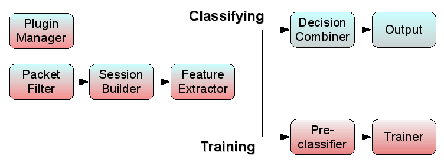
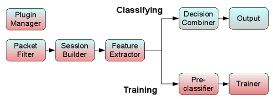

WARNING: This document refers to a
project in active development, so it can undergo heavy and frequent
changes. Please check for updates. The version of the software here
described is 1.0.0 beta.
/* 1.0.0-beta*/
Developers should first read the User’s Manual :-).
Most developers are probably interested in writing a new classification plugin: for this purpose specific information can be found in the Classification Plugins section of this manual.
/* INCLUSA così rimane coerente, senza preoccuparsi di aggiornare manualmente:*/
Definitions
Architecture
TIE platform can be broken down into logical blocks. Some of them are run only in specific use cases1.
/*


*/The online download form of the legacy site is no longer available. To obtain the TIE source code, please write to Antonio Pescapè.
/* descrizione verbale dello schema (se non dovesse piacere):
- When used as a multi-method Classifier, TIE activity
follows this flow:
[packet filter] => [session builder] => [feature extraction] => [decision combiner (with plugins)] => [output] - When used as a Classifier Trainer, TIE activity follows
this flow:
[packet filter] => [session builder] => [feature extraction] => [Pre-Classifier] => [Classifier trainer (with plugins)] - In each case, a [Plugin Manager] block is always active.
*/ In the following there is a brief description of such blocks with references to the source code.
Packet Filter
Captures traffic from network interfaces or from a traffic trace saved in libpcap format.
Before passing traffic to subsequent block (Session Builder) filters out packets that trigger rules specified by command line options2. Packets failing integrity checks are dropped, too.
| Source files |
|---|
tie.c |
| Relevant functions | |
|---|---|
main_loop() |
gets packets from data source (interface or trace file) |
filter_packet() |
filters out packets according to integrity checks and command line options |
Session Builder
TIE processing revolves around a sessions table. Each
session structure in the table contains
- Status Information
- Flags
- Counters
- Features
The Session Builder receives packets accepted by previous stage (packet filter) and aggregates them in sessions according to the current session type. Each session is stored into a hash table, as reported hereafter.
| Session type | Hash table |
|---|---|
| flow | flow_table |
| biflow | biflow_table |
| host | host_table |
| Source files |
|---|
biflow/biflow_table.* |
flow/flow_table.* |
host/host_table.* |
| Relevant data structures | |
|---|---|
struct ft_entry |
flow chain related to the same 5-tuple |
struct flow |
all needed information about a flow |
struct bt_entry |
biflow chain related to the same 5-tuple |
struct biflow |
all needed information about a biflow |
struct ht_entry |
host chain related to the same ip |
struct host |
all needed information about a host |
Feature extraction
This block collects, for each session, the features needed by classifiers. Except for a few ones, only the features specified by command line options3 are collected.
Each classifier, if the collection of the features it needs is not enabled, disables itself.
At the moment, features available to classifiers are:
| Always available |
|---|
| number of packets upstream/downstream |
| payload bytes upstream/downstrem |
| source/destination port |
| transport layer protocol |
| Available ON DEMAND | |
|---|---|
| Feature | option |
| Inter Packet Time between the first n packets | -I |
| Packet Size of the first n packets | -p |
| First n bytes of first packet (in both directions in biflow mode) |
-P |
| Session payload stream of n bytes | -S |
/* il codice va isolato in un apposito file */
| Source files |
|---|
tie.c |
/* ^Relevant functions ^ */
/* funzioni ancora da isolare */
Decision combiner
This block is responsible of taking a decision on the classification of a session evaluating the results returned by different classifiers. For each session, the decision is taken only if all enabled classifiers are ready to classify it. In that case the combiner, using different schemes, can compute a final decision and tags the session with the corresponding application identifier (app_id), sub-application identifier (sub_id) and a confidence value from 0 to 100.
| Source files |
|---|
| class/combiner.c |
| Relevant functions |
|---|
| classify_session() |
| is _session_classifiable() |
Output
This section takes care of printing the result of classification and other statistics on log files and on stdout.
Output file names (and directories) can be specified by command line options.
The pace of output dump depends upon the work mode, as described in the following. On every dump, a new output file is generated (with a timestamp in its name), and all counters are reset; so that each output file will contain data and statistics referred only to its time span.
- Offline
For each garbage collection on the session table, a dump is made for all expired sessions.
On graceful closing of tie process, a dump is made for all sessions left in the table, expired or not. - Realtime
When processing traffic on the wire, file output is done as soon as classification is done. If enabled, output is asynchronously written to socket for remote logging. - Cyclic
At the end of each processing interval (set by command line option /*§§§ quale? §§§ */the garbage collector is called and the output related to expired sessions is dumped.
| Source files |
|---|
output/* |
flow/flow_output.* |
biflow/biflow_output.* |
host/host_output.* |
| Relevant functions | |
|---|---|
store_result() |
Dumps output data and statistics on the output file (default
“class.out”) |
open_log_file() |
Creates the new output file and populates its header |
Pre-classifier
This block classifies each session in the trace according to a pre-classification data file. Such a file is created by earlier classification, processing the same input traffic trace, and is in t2 format.
| Source files |
|---|
| class/preclassification.* |
Classifiers Trainer
This block calls, for each enabled classifier, plugin function
train(), exerting training against pre-classified traffic
build by the Pre-Classifier block.
This way the plugin creates its own fingerprint file, based on both the input traffic trace and the pre-classified data.
| Source files |
|---|
tie.c |
| plugin specific |
Classification Plugins
/* in futuro anche Decision Plugins */ Each classifier is implemented as a plugin (a shared object) loaded at runtime.
Interface
Inside TIE architecture a classifier has a standard structure as
defined in the plugins/plugin.h header file and reported
here:
typedef struct classifier {
int (*disable) ();
int (*enable) ();
int (*load_signatures) (char *);
int (*train) (char *);
class_output *(*classify_session) (void *session);
int (*dump_statistics) (FILE *);
bool (*is_session_classifiable) (void *session);
int (*session_sign) (void *session, class_output *);
char *name;
u_int32_t *flags;
} classifier;
As shown, each classifier maintains its name and some flags about its state. It also defines some standard functions to be used by the Combiner and the Plugin Manager.
A brief description of each function follows:
| function | description |
|---|---|
| disable() | disable and unload the classification plugin. |
| enable() | enables the classifier if all its prerequisites are satisfied. |
| load_signatures() | load fingerprints needed for classification. |
| train() | execute classifier training using pre-classification data. |
| classify_session() | classify current session. |
| dump_statistics() | print collected statistics on classification results. |
| is_session_classifiable() | evaluate if the classifier has enough information to classify the session. |
| session_sign() | if needed extracts some extra information from the session (only during training). |
All these functions are specialized by the particular classifier and
there are not imposed limitations on how them could be implemented.
Moreover each plugin MUST export a class_init(classifier *)
function to be called, during TIE startup, by Plugin Manager. This
function is responsible of exporting all plugin methods and of assigning
its name (taken from enabled_plugins file).
Please refer to plugins/dummy/class_dummy.c for a more
detailed implementation guideline.
Template
A dummy classification plugin is provided as a template for plugin
developers. It can be found in the src/plugins/dummy folder
and is made of the following files:
| File | Description |
|---|---|
| class_dummy.c | contains a skeleton to start the implementation of all classifier methods (some of them don’t need to be modified) |
| Makefile | contains the mandatory structure of a plugin Makefile |
| README | contains an example of documentation for a classification plugin |
| VERSION | contains the version number of the plugin |
Here is reported the interesting part of the Makefile structure to be used for a classification plugin:
...
# Specify here additional OBJECTS needed by this plugin
OBJECTS +=
# Specify here additional linker flags needed by this plugin
LDFLAGS +=
# Specify here static libraries needed by this plugin
LIBS :=
# Specify here files and folders to be copied to plugin destination folder togheter with the plugin.
# Each folder is recursively processed skipping hidden files/folders.
# Each file will be copied in update mode (overwrite only if newer).
COPY :=
...
/* Questo va in una sezione == Plugin Developer Guidelines ==
Together with each classification plugin, a
class_plugin_name.txt file should be written, documenting
its main functionalities, the technique adopted and the format adopted
for the fingerprints.*/
/*
Use Modes
TIE can be used in different modes:
- Classifying
- Comparison
- Learning
In Classifying and Comparison modes, TIE uses plugins’ Classification function, while in Learning mode the Learning function is called.
*/
Initialization
The Plugin Manager, during startup, links at run-time all enabled
plugins (as configured in bin/plugins/enabled_plugins file) and
for each of them calls the class_init() function The plugin
loads its own configuration file, its own fingerprints /*
§§§filename§§§4*/, and performs the
classification.
Classification
Whenever a session status changes (e.g. an incoming packet is
recognized as belonging to it), for each plugin the function
is_session_classifiable() is called by Combiner, to verify
if the plugin has got enough data to process the session. If all
classification plugins return an affirmative answer, for each of them is
called the function classify_session() to actually perform
the classification. After that the combiner, analysing all the the
results, takes its decision about the session.
Training
There are two functions involved in the training process:
session_sign() and train(). The first is
called for each packet belonging to a session until the
SESS_SIGNED flag is set and should store information needed
by training process into a dedicated data structure managed by the
plugin itself. The second one is called at the end of TIE execution and
actually performs the training process using previously stored data.
The train() function can also read training information
directly from the session table. In this case the function
session_sign() could be left as is (setting only the SESS_SIGNED flag),
but it is important to execute TIE disabling the Garbage Collection with
the “-M 0” option. Otherwise, when train() function is called, the
session table will only contain the sessions that are not expired
yet.
In general, the second solution could be used when working on small and medium input traces. When working on big traces it is mandatory to choose the first solution, because maintaining the full session table could easily run out of memory.
Input
The input of plugin processing is held in a struct
containing the current state of a session; when the plugin reads this
struct it has been just updated with fresh data. Such data
are used by the plugin as dataset to be processed, using structure’s
fields as classifier features (see Feature extraction section in this
manual).
/* §§§ If a new plugin needs features different from the ones already
provided, a change in tie code is requested (as it regards
basic structures designed for realtime working mode. */
The struct used depends on the session type as
reported below:
- Using
flowsession type ((see section Definitions )) the input stucture isflow, as defined in src/biflow/biflow_table.h - Using
biflowsession type ((see section Definitions )) the input stucture isbiflow, as defined in src/flow/flow_table.h - Using
hostsession type ((see section Definitions )) the input stucture ishost, as defined in src/host/host_table.h
/* src/biflow/biflow_table.h, line 51 */ /*
biflow struct overall description
Each biflow is represented as a linked list. Besides the
biflow id, each entry is identified by its own
entry_id and linked to the previous entry by
prev pointer.
Each entry holds some packets arrival timestamps (ts_last, ts_stat, up_ts_last, dw_ts_last).
Counters take into account the number of packets and bytes, splitted for upstream and downstream (up_pkts, up_bytes, dw_pkts, dw_bytes).
Connection 5-tuple (Transport protocol, source IP and port, destination IP and port) is held in the five_tuple struct f_tuple.
Other data useful as classification features, such as first bytes and payload stream, are also provided by the struct.
*/
Output
Each classifier plugin provides as output a class_output
structure (see /* */
src/plugins/plugin.h line 53/**/). This struct binds
each processed session((see section Definitions )) to an application,
chosen among the ones listed in the file src/conf/tie_apps.txt
publicly available here.
Plugin’s output is used by Combiner, with the output of other plugins, to decide the ultimate classification result.
Output structure description
The class_output structure, shown below, contains the
result of a classification process in terms of: application identifier
(id), sub-application identifier
(subid), and a confidence value
(confidence) from 0 to 100 (where 100 means
sure). It also contains some flags to report
some events occurred during the classification process.
typedef struct class_output {
u_int16_t id;
u_int8_t subid;
u_int8_t confidence;
u_int32_t flags;
} class_output;
Implementation example
An example for the implementation of a real plugin is the following port based classifier.
Port based classifier
This classifier relies on source and destination port numbers for both TCP and UDP protocols. Most protocols use a well-known server port, thus most fingerprints rely only on destination port. Moreover in some cases both port numbers are standard. The structure adopted for the fingerprints allows to manage both cases, using port number 0 as a jolly value.
| Source files | Description |
|---|---|
class_port.c |
Contains classifier methods implementation |
Makefile |
Contains plugin specific building rules and dependences |
| Application_ports_master.txt | Contains port fingerprints definition as taken from CAIDA CoralReef Suite |
see Sample use section in the User Manual↩︎
see Command line options section in the User Manual↩︎
see Command line options section in the User Manual↩︎
see definitions §§§link§§§↩︎